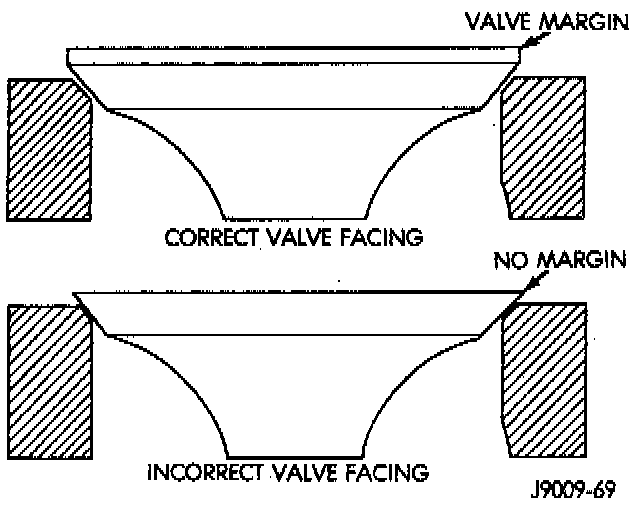

Refacing Valves and Valve Seats

1. Use a valve refacing machine to reface the intake and exhaust valves to the specified angle.
2. After refacing, a margin of at least 0.787 mm (0.031 inch) must remain. If the margin is less than 0.787 mm (0.031 inch), the valve must be replaced.